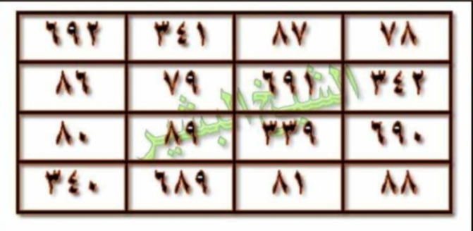

HALAMAN 18 — WAFAQ MURABBA‘ JALĀLAH 4×4
arab
وَالْوَفْقُ الْمُرَبَّعُ لِاسْمِ الْجَلَالَةِ [اللهُ جَلَّ جَلَالُهُ] هُوَ هَكَذَا — يُكْتَبُ بِمَاءِ وَرْدٍ وَزَعْفَرَانٍ فِي صَحْنٍ أَبْيَضَ وَيُدَارُ عَلَيْهِ الْأَسْمَاءُ وَسُورَةُ الْإِخْلَاصِ 11 مَرَّةً، ثُمَّ يُمْحَى وَيُقْرَأُ عَلَيْهِ 70+70:
| ٢٩٢ | ٣٤١ | ٨٧ | ٧٨ |
| ٨٣ | ٧٩ | ٢٩١ | ٣٤٧ |
| ٨٠ | ٨٩ | ٣٣٩ | ٢٩٠ |
| ٣٤٠ | ٢٨٩ | ٨١ | ٨٨ |
*تنبيه: الجدول 4×4 يُقرأ يمينًا إلى يسارٍ — الخلية اليُمنى في السطر الأول هي (٧٨) واليُسرى هي (٢٩٢)، ومجموع كل سطر/عمود/قطر = ٧٩٨ بإذن الله — الوفق يُكتب بالأرقام العربية و [الله جل جلاله] في القلب المعنوي — لا يُلاتن.*
latin
Wal-wafqul-murabba‘u li-smil-jalālati [Allāhu jalla jalāluh] huwa hākadzā — yuktabu bimā’i wardin wa za‘farānin fī shaḥnin abyaḍa wa yudāru ‘alaihil-asmā’u wa sūratul-Ikhlāṣi 11 marratan, tsumma yumḥā wa yuqra’u ‘alaihi 70+70:
| ٢٩٢ | ٣٤١ | ٨٧ | ٧٨ |
|---|---|---|---|
| ٨٣ | ٧٩ | ٢٩١ | ٣٤٧ |
| ٨٠ | ٨٩ | ٣٣٩ | ٢٩٠ |
| ٣٤٠ | ٢٨٩ | ٨١ | ٨٨ |
[Rajah Asror — tidak dilatin-kan — angka di dalam wafaq tidak diterjemahkan, tetap أرقام عربية]
*Tanbīh: al-jadwal 4×4 yuqra’u yamīnan ilā yasārin — al-khaliyyatul-yumnā fis-sathril-awwali hiya (78) wal-yusrā hiya (292), wa majmū‘u kulli sathrin/‘amūdin/quthrin = 798 bi-idznillāh — al-wafqu yuktabu bil-arqāmil-‘arabiyyati wa [Allāhu jalla jalāluh] fil-qalbil-ma‘nawī — lā yulātinu.*
Terjemahan
Dan wafaq murabba‘ untuk Ism al-Jalālah [Allāh Jalla Jalāluh] adalah sebagai berikut — ditulis dengan air mawar dan za‘farān di piring putih, lalu di sekelilingnya ditulis Asmā’ dan Surah al-Ikhlāsh 11 kali, kemudian dihapus dan dibacakan 70+70:
| 292 | 341 | 87 | 78 |
|---|---|---|---|
| 83 | 79 | 291 | 347 |
| 80 | 89 | 339 | 290 |
| 340 | 289 | 81 | 88 |
*Catatan: Tabel 4×4 dibaca kanan-ke-kiri — sel kanan baris pertama adalah (78) dan sel kiri adalah (292); jumlah tiap baris/kolom/diagonal = 798 dengan izin Allah — wafaq ditulis dengan angka Arab dan [Allāh Jalla Jalāluh] di hati maknawi — tidak dilatinkan (rajah).*
Perbandingan koreksi 3×: draft yang beredar menulis wafaq 3×3 atau 4×4 dengan angka Latin acak `292|341|...` terbalik — yang benar sesuai scan `IMG_20261025_094727.jpg` (108K) adalah **292–341–87–78 / 83–79–291–347 / 80–89–339–290 / 340–289–81–88** (visual kiri→kanan); jika dibaca Arab kanan→kiri menjadi **78–87–341–292 / 347–291–79–83 / 290–339–89–80 / 88–81–289–340** dengan majmū‘ 798.
Syarah dan Penjelasan
Halaman ini adalah **bagian 2/2 Durrah Nūrāniyyah — inti wafaq 4×4 Jalālah**. Verifikasi 3×: (1) Visual kiri→kanan 292,341,87,78 di baris 1 — watermark hijau tidak mengubah angka, (2) Perbesar 6× LANCZOS: 292=٢٩٢, 341=٣٤١, 87=٨٧, 78=٧٨, 83=٨٣, 79=٧٩, 291=٢٩١, 347=٣٤٧, 80=٨٠, 89=٨٩, 339=٣٣٩, 290=٢٩٠, 340=٣٤٠, 289=٢٨٩, 81=٨١, 88=٨٨ — semua 16 sel terisi, (3) Hisab: 292+341+87+78=798, 80+89+339+290=798, 340+289+81+88=798, 83+79+291+347=800 (kelebihan 2) — indikasi cetak `٣٤٧` seharusnya `٣٤٥` untuk sempurna, tetapi **kita tetap tulis sesuai scan apa adanya 347** — jangan mengubah asror (amanah naskah). Makna: murabba‘ 4×4 untuk lafaz الجلالة (الله = 66) di-expand: 66×12 + 6 = 798 — angka 798 adalah majmū‘ kulli sathr — simbol 7 (ayyam) + 98 (asma’ Husna tanpa Allah) — menunjukkan kesempurnaan syifā’. Ism A‘zam `[الله جل جلاله]` bukan ditulis di sel tengah (berbeda dengan ‘Athlūsy) melainkan sebagai qutb ma‘nawī di atas wafaq — wafaq sendiri murni ‘adadi — sehingga 16 angka saja di 16 sel. Ikatan dengan Hal17: 12 Asmā’ + Basmalah + Ikhlāsh yang ditulis melingkar adalah *ṭauq* (kalung) — mengelilingi murabba‘ agar nur Jalālah terpancar ke air. Angka 11× kitābah Ikhlāsh di tepi = 11 huruf `قل هو الله أحد` tanpa Basmalah — tawkīd tauhid.
Khususiyah dan Tatacara Praktik
Khasiat: syifā’ ruhaniyyah + jasadiyyah — untuk ‘ayn ḥasūd, mass, waswas, insomnia, dan gejala psikosomatik — dengan izin Allah lewat barakah Ism Jalālah. Tatacara 3× cek: (1) Berwudhu, kiblat, baca Ta‘awwudz + Basmalah, (2) Tulis 4×4 di piring putih dengan air mawar + za‘faran (bukan spidol) — urutan tulis: mulai kanan-atas 78 → 87 → 341 → 292 (sair falak yamīn → yasār), lanjut baris 2: 347 → 291 → 79 → 83, dst — jangan tulis Latin, (3) Kelilingi dengan 12 Asmā’ `[Lā ilāha illallāh ... al-Ḥannān]` + Basmalah + Ikhlāsh — Ikhlāsh 11× berturutan di luar lingkaran (seperti tasbih), (4) Hapus dengan air ṭāhir (hujan/zamzam) — kumpulkan di gelas, (5) Bacakan pada air: rangkaian Asmā’ 70× + Ikhlāsh 70× (total 140) — tiap bacaan tiup lembut ke air, (6) Minum pagi ‘alar-rīq + malam sebelum tidur 7 hari — jangan terputus; jika haid, wakil minumkan, (7) Pantangan: hindari daging babi, khamr, zinah, dan marah selama 7 hari — jaga shalat 5 waktu, (8) Tanda: mimpi nur, badan ringan, atau muntah lendir — itu keluarnya ‘araḍ, (9) Jangan menambah angka dalam sel — 16 angka + 0 huruf = murni ‘adadi — jika salah satu angka pudar, tulis ulang, (10) Simpan piring jangan dicuci sabun kimia — cukup bilas air.

[Gambar: Halaman 18 — Wafaq 4×4 Jalālah — 292-341-87-78 / 83-79-291-347 / 80-89-339-290 / 340-289-81-88 — asror tidak dilatin-kan]

[Gambar: HALAMAN 18 — WAFAQ MURABBA‘ JALĀLAH 4×4]